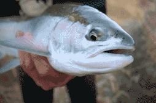

Main Content
Become a Member
YOU GET TO BE A TRAA MEMBER FOR A WHOLE YEAR FOR ONLY $25
Your membership also adds another voice to our efforts in protecting and enhancing aquatic habitats in the London & area community.
Member text statment
YOU'VE TAKEN A LOT OF ENJOYMENT FROM THIS UNIQUE FISHERY.
IT'S TIME TO GIVE BACK BY BEING PART OF THE SOLUTION.
Reasons to Join
Hands on Environmentalism
This is what sets the TRAA apart from other clubs and organizations. You’ll find us right in the water clearing obstructions from streams, measuring returning salmonids & taking samples for DNA analysis, education through trout hatchery tours & stream walks, being a voice for the Thames River watershed & its inhabitants. The list goes on.
Make a Difference

The TRAA has a history of always having a core group of active members supported by those who just want to be part of the solution. Either way, every member of the TRAA is active
in their advocacy for the health of the Thames River watershed and its inhbitants.
Meetings Every Month

The TRAA meets every second Wednesday of each month. We always try to get the meetings started by 7:00pm so try to be there a few minutes beforehand. The venue is the Western Ontario Fish & Game Protective Association's clubhouse located just east of the Dearness Home on Southdale Road (East), on the North side of Southdale Road. The address is 790 Southdale Road East, London, Ontario.